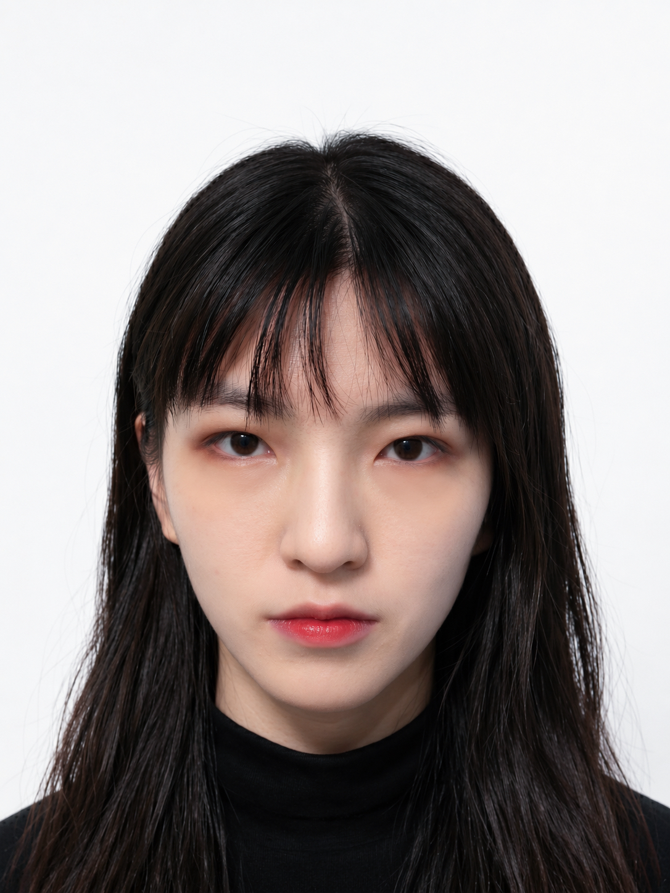

01
Image Generation AI
GANやDiffusion Modelを用いて、絵画画像の欠失部補完や視覚的再構成を 支援する方法を検討しています。
Japanese Painting × AI × Cultural Heritage
日本画と文化財保存の専門性を基盤に、現在は北陸先端科学技術大学院大学 にてAI、データサイエンス、画像生成技術を学び、装潢絵画文化財の デジタル修復支援に関する研究に取り組んでいます。

About Me
武蔵野美術大学で日本画を専攻し、保存科学、博物館情報メディア、 デザイン、考古学などを学びました。現在はJAISTにて知識科学を専攻し、 AI、統計、データ分析、コンピュータシステムを中心に学習しています。
芸術・文化財保存の視点と情報科学の方法論を組み合わせ、文化財修復を 支援する新しいデジタル技術の可能性を探究しています。
Research Focus
GANやDiffusion Modelを用いて、絵画画像の欠失部補完や視覚的再構成を 支援する方法を検討しています。
装潢絵画文化財を対象に、現代の修復理念を尊重しながら、 AIによる保存・復元支援の可能性を研究しています。
画像分類、特徴抽出、画像分割、構造推定を活用し、 文化財画像の分析と生成モデルへの条件入力を検討しています。
Experience
M.S. in Knowledge Science. AI、統計、データサイエンス、 コンピュータシステムを中心に学習。
建築・都市計画・防災・建築史に関する研究生経験を通じて、 文化財や空間情報への関心を広げました。
展示企画、保存理論、資料データ管理、デジタル化、 博物館情報発信に関する実務を経験。
B.S. in Fine Art, Japanese Painting. 日本画、保存科学、 技法材料、博物館情報メディアを学習。
Skills
Contact
AI、文化財修復、画像生成、博物館情報、デジタルアーカイブに関する 研究・開発に関心があります。
Contact Me